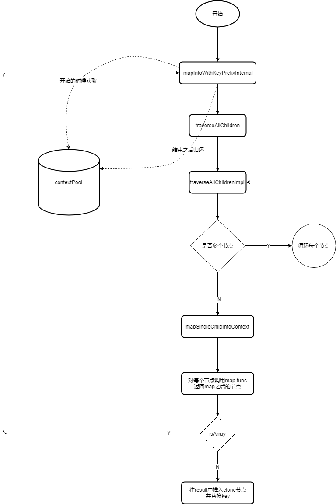

# React 源码解读（一）JSX
本篇源码基于 react 16.8.6 版本
我把 __DIV__ 的内容都删掉暂不关注
# React.createElement
我们在写jsx的代码时，必须要引入React文件，那么我们写的dom都被编译成了什么
<ul>
<li>1</li>
<li>2</li>
<li>3</li>
</ul>
2
3
4
5
用babel编译后可以看到我们的代码被编译成了 React.createElement() 的形式
React.createElement(
"ul", null,
React.createElement("li", null, "1"),
React.createElement("li", null, "2"),
React.createElement("li", null, "3")
);
2
3
4
5
6
所以我们平时写的其实都只是 createElement 的语法糖 接下来我们就先看一下createElement到底都有些什么东西吧。
# createElement
找到react 下的 ReactElement.js 文件 我们直接找到 createElement 方法
export function createElement(type, config, children) {}
一共接收三个参数 type: 它的dom类型 config: 就是它的一些属性 children: 就是它下面的子元素
可以看到里面主要做了这样几件事
- 创建了 ref、key 等变量。
let propName;
// Reserved names are extracted
const props = {};
let key = null;
let ref = null;
let self = null;
let source = null;
2
3
4
5
6
7
8
9
- 判断接收的config参数是否为空，然后依次判断这些参数再进行赋值
if (config != null) {
// 赋值特殊的属性： ref和key
// hasValidRef 返回了 config.ref !== undefined;
if (hasValidRef(config)) {
ref = config.ref;
}
// hasValidKey 返回了 config.key !== undefined;
if (hasValidKey(config)) {
// react dom diff 加上这个 key
key = '' + config.key;
}
self = config.__self === undefined ? null : config.__self;
source = config.__source === undefined ? null : config.__source;
// Remaining properties are added to a new props object
for (propName in config) {
// 过滤掉特殊节点
if (
hasOwnProperty.call(config, propName) &&
!RESERVED_PROPS.hasOwnProperty(propName)
) {
props[propName] = config[propName];
}
}
}
2
3
4
5
6
7
8
9
10
11
12
13
14
15
16
17
18
19
20
21
22
23
24
25
- 判断有没有子节点，有的话会将props.children赋值为对象或数组
// Children can be more than one argument, and those are transferred onto
// the newly allocated props object.
// 子节点个数，去除掉前两位
const childrenLength = arguments.length - 2;
// 如果有一个子节点，就直接赋值为对象
if (childrenLength === 1) {
props.children = children;
} else if (childrenLength > 1) {
// 如果有多个，就将数组赋值上
const childArray = Array(childrenLength);
for (let i = 0; i < childrenLength; i++) {
childArray[i] = arguments[i + 2];
}
props.children = childArray;
}
2
3
4
5
6
7
8
9
10
11
12
13
14
15
- 将其余属性传入
// Resolve default props
if (type && type.defaultProps) {
const defaultProps = type.defaultProps;
for (propName in defaultProps) {
if (props[propName] === undefined) {
props[propName] = defaultProps[propName];
}
}
}
2
3
4
5
6
7
8
9
- 返回一个 react element
// 返回一个react element
return ReactElement(
type,
key,
ref,
self,
source,
ReactCurrentOwner.current,
props,
);
2
3
4
5
6
7
8
9
10
# ReactElement
在 createElement 方法中，最后返回了一个 ReactElement 执行 那我们接着找到 ReactElement 方法
const ReactElement = function(type, key, ref, self, source, owner, props) {
const element = {
// 用来表明这是一个react Element
// 为啥需要$$typeof
// $$typeof 为啥要是Symbol
// This tag allows us to uniquely identify this as a React Element
$$typeof: REACT_ELEMENT_TYPE,
// Built-in properties that belong on the element div, span, MyChild
type: type,
key: key,
ref: ref,
props: props,
// Record the component responsible for creating this element.
_owner: owner,
};
return element;
};
2
3
4
5
6
7
8
9
10
11
12
13
14
15
16
17
18
19
ReactElement 方法定义了 element 对象，将传入的值赋给对象，最后再将element 返回出去 这里面核心的东西就是一个 $$typeof
$$typeof 赋值了 REACT_ELEMENT_TYPE，我们再跟着找到 shared/ReactSymbols.js
export const REACT_ELEMENT_TYPE = hasSymbol
? Symbol.for('react.element')
: 0xeac7;
2
3
有Symbol的话 REACT_ELEMENT_TYPE 就是一个 Symbol 如果没有的话它就是一个 16进制的值 至于为什么是 0xeac7，因为它长的像 React -o-（这是作者说的）
OK,然后我们再回到 ReactElement 中探索几个问题
- 为什么需要$$typeof 在网页中经常会有xss csrf 等黑客攻击，react 通过设置 $$typeof 来表明自己是一个 react 组件。 在提交页面的时候，如果 $$typeof 无效，则不进行渲染。 那如果黑客也知道要设置$$typeof的话岂不就是形同虚设了吗？所以引出我们的第二个问题
- $$typeof 为啥要是Symbol 我们知道 Symbol 是唯一值，所以将 $$typeof 设置成Symbol能起到唯一标识的作用。 同时 Symbol还有一个特殊的作用。我们在提交表单时，最后交给后台的其实是json字符串。
var test = {
a: 'a',
b: Symbol.for('react.element')
}
test // { a: 'a', b: Symbol.for('react.element')}
JSON.stringify(test) // "{"a":"a"}"
2
3
4
5
6
JSON.stringify 会将 Symbol 类型忽略掉，所以在上传后还是无效的
也就是说，我们用正常方式写的react组件中含有 $$typeof 属性，而黑客如果想通过非正常手段创建组件（比如插入一个广告），那么即便他添加了$$typeof 属性，在进行JSON.stringify的时候也会将它过滤掉，这样react还是不会去识别它。 不过也还是会存在漏洞，比如在不支持Symbol的浏览器中注入 0xeac7 的话，也没有办法╮(╯▽╰)╭
# ReactChildren
在主文件中，可以看到ReactChildren。 这个方法封装了处理 props.children 的方法。
import { forEach, map, count, toArray, only } from './ReactChildren';
const React = {
Children: {
map,
forEach,
count,
toArray,
only
}
};
2
3
4
5
6
7
8
9
10
在 ReactChildren 中我们看到最终导出了 forEach 等方法
export {
forEachChildren as forEach,
mapChildren as map,
countChildren as count,
onlyChild as only,
toArray,
};
2
3
4
5
6
7
那我们就以 React.Children.forEach 为例，具体的流程如下图所示

React.Children.forEach 调度的时候创建 children 节点防止子节点内存抖动
在 ReactChildren 中我们找到 forEachChildren 方法
function forEachChildren(children, forEachFunc, forEachContext) {
if (children == null) {
return children;
}
// 理解一个对象池
const traverseContext = getPooledTraverseContext(
null,
null,
forEachFunc,
forEachContext,
);
traverseAllChildren(children, forEachSingleChild, traverseContext);
releaseTraverseContext(traverseContext);
}
2
3
4
5
6
7
8
9
10
11
12
13
14
其中 getPooledTraverseContext() 方法多次出现在这些方法中（forEach、map等） getPooledTraverseContext我们可以理解为一个对象池，从对象池中取出一个对象来赋值，用完之后再清空放回，以此来防止内存抖动。
解释一下就是，我们如果每次使用的时候都重新创建一个对象，用完后在把它回收掉的话，那么它的内存就是一种锯齿形的抖动状。 如果我们在一开始的时候就创建好了一些对象放在这，用的时候我们赋值，用完再把它清空，这样它的内存就会是一条直线。
在 getPooledTraverseContext 中维护一个对象数为10的池子
const POOL_SIZE = 10;
const traverseContextPool = [];
// 维护一个对象最大为10的池子，从这个池子取到对象去赋值，用完了清空， 防止内存抖动
function getPooledTraverseContext(
mapResult,
keyPrefix,
mapFunction,
mapContext,
) {
if (traverseContextPool.length) {
const traverseContext = traverseContextPool.pop();
traverseContext.result = mapResult;
traverseContext.keyPrefix = keyPrefix;
traverseContext.func = mapFunction;
traverseContext.context = mapContext;
traverseContext.count = 0;
return traverseContext;
} else {
return {
result: mapResult,
keyPrefix: keyPrefix,
func: mapFunction,
context: mapContext,
count: 0,
};
}
}
2
3
4
5
6
7
8
9
10
11
12
13
14
15
16
17
18
19
20
21
22
23
24
25
26
27
当不需要使用的时候，在通过 releaseTraverseContext 方法置空，把对象重新放回到对象池中
function releaseTraverseContext(traverseContext) {
traverseContext.result = null;
traverseContext.keyPrefix = null;
traverseContext.func = null;
traverseContext.context = null;
traverseContext.count = 0;
if (traverseContextPool.length < POOL_SIZE) {
traverseContextPool.push(traverseContext);
}
}
2
3
4
5
6
7
8
9
10